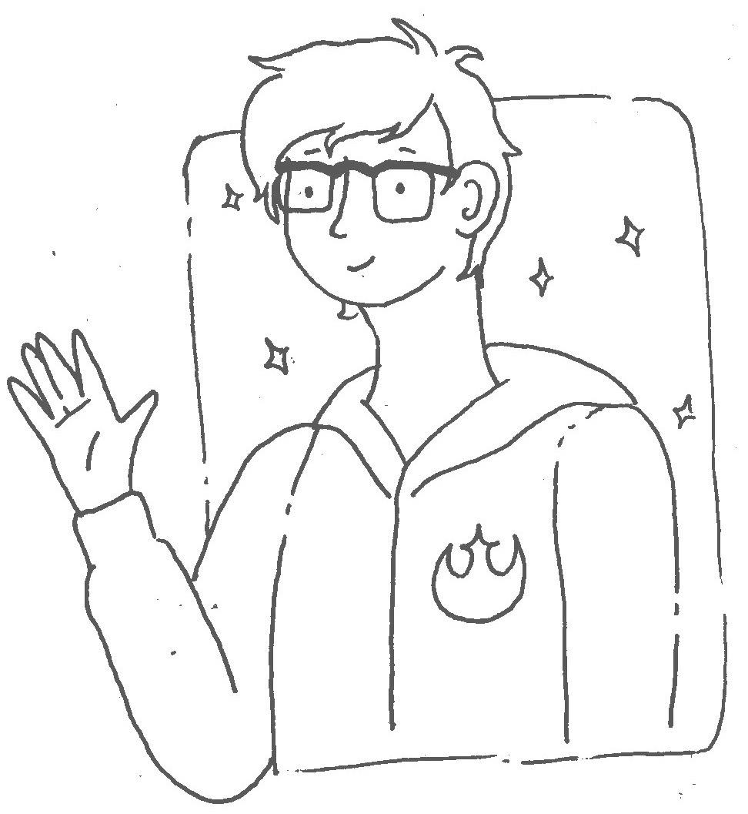

The Halcyon Sensory Spaceship is a fully controllable, comprehensive, and immersive sensory experience
THE PROBLEM
Public environments like theme parks are typically not accommodating to those with sensory issues (commonly seen in Autism Spectrum Disorder and Sensory Processing Disorder.) This can lead to individuals using situation avoidance as a coping mechanism, therefore missing out on social learning opportunities.
OUR SOLUTION
We created the Halcyon Sensory Spaceship, a comprehensive, immersive, and fully controllable sensory experience. The Spaceship puts the user in the captain’s seat, the environment adapts to entirely to their sensory needs. After the experience, the user able to re-enter the public environment feeling calm and secure.
DESIGNING FOR ONE (AND FOR ALL)
This is AJ.
He was diagnosed with high functioning Autism at age 3, and is now 11 years old.
He is wicked good at math, always cracking jokes, and utterly obsessed with Star Wars. He likes to spend most of his days hanging out with his family and playing video games, like your average 11 year old boy. He was diagnosed with High Functioning Autism at the age of 3, and was diagnosed with panic disorder later in life around age 10. He is very social, and loves making new friends, however adapting to new environments can be a very intense experience for him which frequently causes him to feel anxiety from a strong fear of the unknown. He is a very sweet boy, rarely breaking out in aggressive behavior and you’ll almost always see him with a smile on his face. One of our teammates has a close tie to him, therefore we’ve decided to design a solution just for him (with hopes that it can be a solution for many).

OUR MESSAGE
“I’m astounded that this is revolutionary.”
- Olenka Steciw Villarreal, Founder of Magical Bridge Foundation
The Halcyon Sensory Spaceship carries a message of radical accessibility with a dash of speculative design. By occupying such a large footprint, the Spaceship encourages the businesses who buy in to adopt this message. It gets people talking about Sensory Issues and how we can make the world better for everybody.
MULTI-MODALITY

Sight
Lights with adjustable color and brightness are paired with a simple projector to create gentle visual stimulation and adapt the environment. Lights and symbols also provide visual feedback.
Touch
Intuitive touch controls and multi-textured objects
give the user tactile feedback and the option to
stim and fidget with objects in the space.
Sound
A one-sided voice output delivers instructions to the user and creates a human presence in the room. The user isn’t required to speak back to the interface as some users are nonverbal.
THE LORE
You are an astro-botanist travelling the universe to collect organic samples. You’ve just landed on a planet called Earth located in the Orion arm of the Milky Way.
Earth has a sensory environment which is different to your home planet of Halcyon. The Sensory Spaceship is a hyper sensory chamber. You, the captain, have complete control over your environment. Through gradual adjustment, it will help you calm down and get acclimated to Earth’s sensory atmosphere.
OUR MISSION
We’ve set out to switch the narrative from disorder to a gift which grants individuals with unique perceptions of the world. As they say, when you’ve met one person with Autism, you’ve met one person with Autism. We hope that through this process we can give a voice to those with Autism and heightened sensitivities, and family members of those individuals. We firmly believe that through designing an adaptable and flexible environment we can change perceptions, and shift the conversation to one that is more celebratory of the passion, sensitivity, and laser focus often seen in people on the spectrum. Follow us through our senior capstone, to understand how our research drove each and every touchpoint in our final solution.
PROJECT SCOPE
Studying people who have sensory problems with or without an autism diagnosis could help these children and provide insight into the relationship between sensory problems and the core social and communication problems seen in autism.
“At least three-quarters of children with
autistic spectrum disorders have significant
symptoms of Sensory Processing Disorder”
Source: STAR Institute
TARGET AUDIENCE
Students age 11 to 141 who have both High Functioning Autism and Sensory Processing Disorder2 that live in a lower to middle income household3.
[1] “Parents often begin panicking when their kids hit 14 and
transition planning starts coming up.”
- Child Mind Institute
[2] “Parents whose children are termed “high-functioning,” including those with an
Asperger’s diagnosis, have reason to be concerned that their kids—who may be
dealing with things like ADHD, anxiety and sensory issues in addition to their
social and communication delays—are not going to magically stop needing
support after they reach a certain chronological age.”
- Child Mind Institute
[3] “Students with ASD from lower-income families are at especially high risk
[for failing to successfully transition into adulthood]”
- Interactive Autism Network
Learn About Your Community
THE RESEARCH PHASE
In Ten Weeks We...
Reviewed 30 pieces of literature about ASD and SPD
Sent out two surveys with 116 and 58 responses
Toured the Matthew Reardon Center for Autism
Met 30 kids with Autism Spectrum Disorder
Talked to a behavioral therapist specializing in ASD
Interviewed five parents, two adults, and one child with ASD and SPD
Interviewed the founder of the Magical Bridge Foundation
and talked to a toy designer at HEXBUG robotic toys.
CORE INSIGHTS
01
Sensory issues may hinder social ability
...by causing situation avoidance and the individual to “shut down”
as a coping mechanism. Being able to communicate that there is a
sensory problem is integral to the individual being able to interact
with the world around them.
02
Transitioning into adulthood is extremely difficult without the proper tools to do so.
Kids with autism in lower income brackets have a hard time gaining access to resources like doctors and therapists. This creates problems for them as adults because they haven’t built a solid foundation to grow upon.
03
Sensory problems cause major anxiety which can get displaced to look like anger or acting out.
Self awareness is what it comes down to at the end of the day, for
parents and kids, and figuring which self-soothing methods work best.
04
Finding an outlet to express yourself if you can’t verbalise your emotions is important.
Personifying the symptoms of ASD and SPD makes them easier to talk about. Video games and technology are popular methods for people with ASD to express themselves and socialize with others.
05
Society could be a bit more welcoming to people with sensory needs.
While wheelchair ramps have made buildings accessible to those with physical disabilities, the public space is not very welcoming to people with cognitive impairments or sensory needs.
06
The concept of an ideal environment looks different to everyone.
People with sensory issues have particular needs regarding the
facets of their environment. Some like it hot, some like it cold,
some like it squishy, some like it stable. The environment needs
to adapt in order to suit the needs of the individual.
STEEP ANALYSIS
Social
Kids with sensory issues are at risk for being singled out and bullied
Inclusive play for kids with ASD is imperative to health and social development
Technology
Tech is popular for ASD/SPD because it is flexible, multisensory, and multimodal
Environment
Sensory issues stem from the environment being misaligned to the individual’s needs
Environments need to be flexible in order to accommodate a wide range of abilities
Economic
People from low income brackets fall through the cracks in the disability system
Political
The politics surrounding treatment and diagnosis make it difficult to do either effectively
It’s hard to get treatment for sensory issues because SPD isn’t recognized as its own thing
Design for Everybody
CO-CREATION
After learning about our community, it was time to design alongside our users. We asked AJ to sit down and draw his dream spaceship. We told him to make a place to calm down and have fun. AJ's perfect spaceship includes:
Chicken Nuggets!
A place to calm down in public
An understanding community
The feeling of security
Multiple textures
User control
A voice so he doesn’t feel alone
Music or white noise
Soundproofing
Nothing requiring fine motor
Secure everything to walls/floor
Things to hit/throw
Refocusing activity
Porthole or room for caretaker
Sensory/texture station

QUICK AND DIRTY PROTOTYPING
Armed with AJ's list of requirements, we dove into low-fidelity prototyping.
We constructed a cardboard spaceship at scale to test the ergonomics at scale and walk through the interaction with our users. We handed our users sharpies to edit the design on the fly. From here, we recognized some major usability issues with the spaceship design like the lack of wheelchair access and room for the caretaker.
MID-FIDELITY PROTOTYPE
This mid-fidelity prototype is the product of our first ten week design sprint.
The original plan for our second design sprint was to construt the spaceship at full scale and functionality. This full-scale functional prototype would be donated to the Matthew Reardon Center for Autism, a facility we toured during our first round of research, to join their new sensory playground. Unfortunately, the world is an unpredictable place so these plans were put on hold and the spaceship construction turned digital.

Evaluate and Update
USER FLOW + DIALOGUE FLOW
Welcome
Ground the user in a calm, dark, welcoming environment.
Terraforming
Put the user in a position of control and offer a refocusing activity
Unguided Meditation
Allow the user to explore and alter their space at their own pace
Sensory Reintegration
Slowly reintroduce user to external stimuli to prepare them for the outside world
Deliver Token
Gift the user a reminder of the coping skills they’ve learned in this exercise
The Team
Jena Martin
Jena is a UX designer with a passion for human-centered design, largely the importance of putting the users’ needs first. She believes in leading with compassion and the hope of bettering people’s lives through strong UX research strategy, design, and storytelling. In her free time, you can most likely find her with her nose in a novel or comic book, or giving a Tarot reading to anyone willing.
Andrew Bretnall
Andrew is a user experience designer with a background in Industrial Design. He loves research, designing interfaces and user interactions, ergonomic product design, and much more. He recently graduated with a BFA in User Experience Design from SCAD and is ready to jump into the design world! He has already tackled the way money moves and is excited to continue designing for new and novel use cases.
Calyssa Nowviskie
Calyssa is a UX Designer with a focus in visual
design. After studying computer science
and mathematics for three years, she
switched gears to study UX.
Her STEM background allows her to bring
an analytical eye to her designs as well as
to work closely with developers and
engineers to craft beautiful, usable, final
products.
UX Senior Studio 2020 | Prof. BC Hwang | SCAD